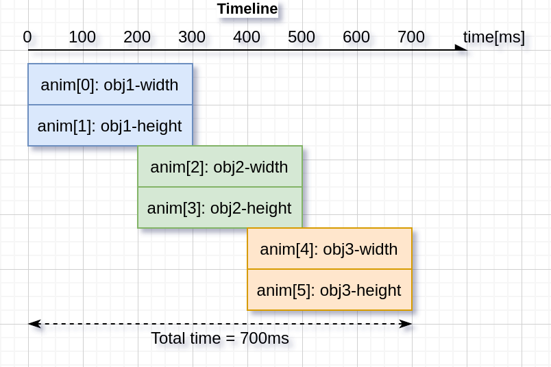

Animation (lv_anim)¶
Animations allow you to define the way something should move or change over time, and let LVGL do the heavy lifting of making it happen. What makes it so powerful is that the thing being changed can be virtually anything in your system. It is very convenient to apply this to LVGL Widgets in your user interface (UI), to change their appearance, size or location over time. But because it is — at its core — a generic change-over-time manager, complete with a variety of optional event callbacks, its application can be wider than just to UI components.
For each Animation you create, it accomplishes the above by providing a generic method of varying a signed integer from a start value to an end value over a specified time period. It allows you to specify what object it applies to (the "variable"), which is available in the callback functions that are called as the Animation is playing through.
This variation over time can be linear (default), it can be on a path (curve) that you specify, and there is even a variety of commonly-used non-linear effects that can be specified.
The main callback called during an Animation (when it is playing) is called an animator function, which has the following prototype:
void func(void *var , int32_t value);
This prototype makes it easy to use most of the LVGL set functions directly or via a trivial wrapper. It includes:
most of the widget properties
functions that set local style properties directly on objects (needs a wrapper to set the selector)
set properties on
lv_style_tobjects (e.g. shared styles) (lv_obj_report_style_changeneeds to be called to notify the widgets having the style)
lv_style_set_<property_name>(&style, <value>)lv_obj_set_<property_name>(widget, <value>)
Because of the former, an animation on a single lv_style_t object shared
among several objects can simultaneously modify the appearance of all objects that
use it. See Styles for more details.
Examples of the latter are: lv_obj_set_x(widget, value) or lv_obj_set_width(widget, value).
This makes it very convenient to apply to the appearance (and other attributes) of UI components. But you can provide your own "set" functions, and so the application of Animations is really limited only by your imagination.
The number of Animations that can be playing at the same time for a given object with a given animator callback is one (1). However, the number of Animations that can be playing at the same time is limited only by available RAM and CPU time for:
a given object with different animator callbacks; and
different objects.
Thus, you can have a Button's width being changed by one Animation while having its height being changed by another Animation.
Create an Animation¶
To create an Animation, start by creating an Animation template in an
lv_anim_t variable. It has to be initialized and configured with
lv_anim_set_...() functions.
/* INITIALIZE AN ANIMATION
*-----------------------*/
static lv_anim_t anim_template;
static lv_anim_t * running_anim;
lv_anim_init(&anim_template);
/* MANDATORY SETTINGS
*------------------*/
/* Set the "animator" function */
lv_anim_set_exec_cb(&anim_template, (lv_anim_exec_xcb_t) lv_obj_set_x);
/* Set target of the Animation */
lv_anim_set_var(&anim_template, widget);
/* Length of the Animation [ms] */
lv_anim_set_duration(&anim_template, duration_in_ms);
/* Set start and end values. E.g. 0, 150 */
lv_anim_set_values(&anim_template, start, end);
/* OPTIONAL SETTINGS
*------------------*/
/* Time to wait before starting the Animation [ms] */
lv_anim_set_delay(&anim_template, delay);
/* Set path (curve). Default is linear */
lv_anim_set_path_cb(&anim_template, lv_anim_path_ease_in);
/* Set anim_template callback to indicate when the Animation is completed. */
lv_anim_set_completed_cb(&anim_template, completed_cb);
/* Set anim_template callback to indicate when the Animation is deleted (idle). */
lv_anim_set_deleted_cb(&anim_template, deleted_cb);
/* Set anim_template callback to indicate when the Animation is started (after delay). */
lv_anim_set_start_cb(&anim_template, start_cb);
/* When ready, play the Animation backward with this duration. Default is 0 (disabled) [ms] */
lv_anim_set_reverse_duration(&anim_template, time);
/* Delay before reverse play. Default is 0 (disabled) [ms] */
lv_anim_set_reverse_delay(&anim_template, delay);
/* Number of repetitions. Default is 1. LV_ANIM_REPEAT_INFINITE for infinite repetition */
lv_anim_set_repeat_count(&anim_template, cnt);
/* Delay before repeat. Default is 0 (disabled) [ms] */
lv_anim_set_repeat_delay(&anim_template, delay);
/* true (default): apply the start value immediately, false: apply start value after delay when the Anim. really starts. */
lv_anim_set_early_apply(&anim_template, true/false);
/* START THE ANIMATION
*------------------*/
running_anim = lv_anim_start(&anim_template); /* Start the Animation */
Animation Path¶
You can control the Path (curve) of an Animation. The simplest case is linear, meaning the current value between start and end is changed at the same rate (i.e. with fixed steps) over the duration of the Animation. A Path is a function which calculates the next value to set based on the current state of the Animation. There are a number of built-in Paths that can be used:
lv_anim_path_linear(): linear Animation (default)lv_anim_path_step(): change in one step at the endlv_anim_path_ease_in(): slow at the beginninglv_anim_path_ease_out(): slow at the endlv_anim_path_ease_in_out(): slow at the beginning and endlv_anim_path_overshoot(): overshoot the end valuelv_anim_path_bounce(): bounce back a little from the end value (like hitting a wall)
Alternately, you can provide your own Path function.
lv_anim_init(&my_anim) sets the Path to lv_anim_path_linear()
by default. If you want to use a different Path (including a custom Path function
you provide), you set it using lv_anim_set_path_cb(&anim_template, path_cb).
If you provide your own custom Path function, its prototype is:
int32_t calculate_value(lv_anim_t * anim);
Speed vs Time¶
Normally, you set the Animation duration directly using
lv_anim_set_duration(&anim_template, duration_in_ms). But in some cases
the rate is known but the duration is not known. Given an Animation's start
and end values, rate here means the number of units of change per second, i.e.
how quickly (units per second) the Animation's value needs to change between the
start and end value. For such cases there is a utility function
lv_anim_speed_to_time() you can use to compute the Animation's duration, so
you can set it like this:
uint32_t change_per_sec = 20;
uint32_t duration_in_ms = lv_anim_speed_to_time(change_per_sec, 0, 100);
/* `duration_in_ms` will be 5000 */
lv_anim_set_duration(&anim_template, duration_in_ms);
Animating in Both Directions¶
Sometimes an Animation needs to play forward, and then play backwards, effectively
reversing course, animating from the end value back to the start value again.
To do this, pass a non-zero value to this function to set the duration for the
reverse portion of the Animation:
lv_anim_set_reverse_duration(&anim_template, duration_in_ms).
Optionally, you can also introduce a delay between the forward and backward directions using lv_anim_set_reverse_delay(&anim_template, delay_in_ms)
Starting an Animation¶
After you have set up your lv_anim_t object, it is important to realize
that what you have set up is a "template" for a live, running Animation that has
not been created yet. When you call lv_anim_start(&anim_template)
passing the template you have set up, it uses your template to dynamically allocate
an internal object that is a live, running Animation. This function returns a
pointer to that object.
static lv_anim_t anim_template;
static lv_anim_t * running_anim;
/* Set up template... */
lv_anim_init(&anim_template);
/* ...and other set-up functions above. */
/* Later... */
running_anim = lv_anim_start(&anim_template);
Note
lv_anim_start(&anim_template) makes its own copy of the Animation template, so if you do not need it later, its contents do not need to be preserved after this call.
Once a live running Animation has been started, it runs until it has completed, or until it is deleted (see below), whichever comes first. An Animation has completed when:
its "value" has reached the designated
endvalue;if the Animation has a non-zero reverse duration value, then its value has run from the
endvalue back to thestartvalue again;if a non-zero repeat count has been set, it has repeated the Animation that number of times.
Once the live, running Animation reaches completion, it is automatically deleted from the list of running Animations. This does not impact your Animation template.
Note
If lv_anim_set_repeat_count(&anim_template, cnt) has been called
passing LV_ANIM_REPEAT_INFINITE, the animation never reaches a state
of being "completed". In this case, it must be deleted to terminate the
Animation.
Deleting Animations¶
You should delete an Animation using lv_anim_delete(var, func) if one of these two conditions exists:
the object (variable) being animated is deleted (and it is not a Widget) or
a running animation needs to be stopped before it is completed.
Note
If the object (variable) being deleted is a type of Widget, the housekeeping code involved in deleting it also deletes any running animations that are connected with it. So lv_anim_delete(var, func) only needs to be called if the object being deleted is not one of the Widgets.
If you kept a copy of the pointer returned by lv_anim_start() as
running_anim, you can delete the running animation like this:
lv_anim_delete(running_anim->var, running_anim->exec_cb);
In the event that the Animation completes after you have determined it needs to be
deleted, and before the call to lv_anim_delete() is made, it does no harm
to call it a second time — no damage will occur.
This function returns a Boolean value indicating whether any live, running Animations were deleted.
Pausing Animations¶
If you kept a copy of the pointer returned by lv_anim_start(),
you can pause the running animation using lv_anim_pause(animation) and then resume it
using lv_anim_resume(animation).
lv_anim_pause_for(animation, milliseconds) is also available if you wish for the animation to resume automatically after.
Timeline¶
You can create a series of related animations that are linked together using an Animation Timeline. A Timeline is a collection of multiple Animations which makes it easy to create complex composite Animations. To create and use an Animation Timeline:
Create an Animation template but do not call
lv_anim_start()on it.Create an Animation Timeline object by calling
lv_anim_timeline_create().Add Animation templates to the Timeline by calling lv_anim_timeline_add(timeline, start_time, &anim_template).
start_timeis the start time of the Animation on the Timeline. Note thatstart_timewill override any value given to lv_anim_set_delay(&anim_template, delay).Call lv_anim_timeline_start(timeline) to start the Animation Timeline.
Note
lv_anim_timeline_add(timeline, start_time, &anim_template) makes its own copy of the contents of the Animation template, so if you do not need it later, its contents do not need to be preserved after this call.
It supports forward and reverse play of the entire Animation group, using lv_anim_timeline_set_reverse(timeline, reverse). Note that if you want to play in reverse from the end of the Timeline, you need to call lv_anim_timeline_set_progress(timeline, LV_ANIM_TIMELINE_PROGRESS_MAX) after adding all Animations and before telling it to start playing.
Call lv_anim_timeline_pause(timeline) to pause the Animation Timeline. Note: this does not preserve its state. The only way to start it again is to call lv_anim_timeline_start(timeline), which starts the Timeline from the beginning or at the point set by lv_anim_timeline_set_progress(timeline, progress).
Call lv_anim_timeline_set_progress(timeline, progress) function to set the
state of the Animation Timeline according to the progress value. progress is
a value between 0 and 32767 (LV_ANIM_TIMELINE_PROGRESS_MAX) to indicate the
proportion of the Timeline that has "played". Example: a progress value of
LV_ANIM_TIMELINE_PROGRESS_MAX / 2 would set the Timeline play to its
half-way point.
Call lv_anim_timeline_get_playtime(timeline) function to get the total duration (in milliseconds) of the entire Animation Timeline.
Call lv_anim_timeline_get_reverse(timeline) function to get whether the Animation Timeline is also played in reverse after its forward play completes.
Call lv_anim_timeline_delete(timeline) function to delete the Animation Timeline. Note: If you need to delete a Widget during Animation, be sure to delete the Animation Timeline before deleting the Widget. Otherwise, the program may crash or behave abnormally.

Examples¶
Start animation on an event¶
C code
View on GitHub#include "../lv_examples.h"
#if LV_BUILD_EXAMPLES && LV_USE_SWITCH
static void anim_x_cb(void * var, int32_t v)
{
lv_obj_set_x((lv_obj_t *) var, v);
}
static void sw_event_cb(lv_event_t * e)
{
lv_obj_t * sw = lv_event_get_target_obj(e);
lv_obj_t * label = (lv_obj_t *) lv_event_get_user_data(e);
if(lv_obj_has_state(sw, LV_STATE_CHECKED)) {
lv_anim_t a;
lv_anim_init(&a);
lv_anim_set_var(&a, label);
lv_anim_set_values(&a, lv_obj_get_x(label), 100);
lv_anim_set_duration(&a, 500);
lv_anim_set_exec_cb(&a, anim_x_cb);
lv_anim_set_path_cb(&a, lv_anim_path_overshoot);
lv_anim_start(&a);
}
else {
lv_anim_t a;
lv_anim_init(&a);
lv_anim_set_var(&a, label);
lv_anim_set_values(&a, lv_obj_get_x(label), -lv_obj_get_width(label));
lv_anim_set_duration(&a, 500);
lv_anim_set_exec_cb(&a, anim_x_cb);
lv_anim_set_path_cb(&a, lv_anim_path_ease_in);
lv_anim_start(&a);
}
}
/**
* Start animation on an event
*/
void lv_example_anim_1(void)
{
lv_obj_t * label = lv_label_create(lv_screen_active());
lv_label_set_text(label, "Hello animations!");
lv_obj_set_pos(label, 100, 10);
lv_obj_t * sw = lv_switch_create(lv_screen_active());
lv_obj_center(sw);
lv_obj_add_state(sw, LV_STATE_CHECKED);
lv_obj_add_event_cb(sw, sw_event_cb, LV_EVENT_VALUE_CHANGED, label);
}
#endif
Playback animation¶
C code
View on GitHub#include "../lv_examples.h"
#if LV_BUILD_EXAMPLES && LV_USE_SWITCH
static void anim_x_cb(void * var, int32_t v)
{
lv_obj_set_x((lv_obj_t *) var, v);
}
static void anim_size_cb(void * var, int32_t v)
{
lv_obj_set_size((lv_obj_t *) var, v, v);
}
/**
* Create a playback animation
*/
void lv_example_anim_2(void)
{
lv_obj_t * obj = lv_obj_create(lv_screen_active());
lv_obj_remove_flag(obj, LV_OBJ_FLAG_SCROLLABLE);
lv_obj_set_style_bg_color(obj, lv_palette_main(LV_PALETTE_RED), 0);
lv_obj_set_style_radius(obj, LV_RADIUS_CIRCLE, 0);
lv_obj_align(obj, LV_ALIGN_LEFT_MID, 10, 0);
lv_anim_t a;
lv_anim_init(&a);
lv_anim_set_var(&a, obj);
lv_anim_set_values(&a, 10, 50);
lv_anim_set_duration(&a, 1000);
lv_anim_set_reverse_delay(&a, 100);
lv_anim_set_reverse_duration(&a, 300);
lv_anim_set_repeat_delay(&a, 500);
lv_anim_set_repeat_count(&a, LV_ANIM_REPEAT_INFINITE);
lv_anim_set_path_cb(&a, lv_anim_path_ease_in_out);
lv_anim_set_exec_cb(&a, anim_size_cb);
lv_anim_start(&a);
lv_anim_set_exec_cb(&a, anim_x_cb);
lv_anim_set_values(&a, 10, 240);
lv_anim_start(&a);
}
#endif
Cubic Bezier animation¶
C code
View on GitHub#include "../lv_examples.h"
#if LV_BUILD_EXAMPLES && LV_USE_SLIDER && LV_USE_CHART && LV_USE_BUTTON && LV_USE_GRID
/**
* the example show the use of cubic-bezier3 in animation.
* the control point P1,P2 of cubic-bezier3 can be adjusted by slider.
* and the chart shows the cubic-bezier3 in real time. you can click
* run button see animation in current point of cubic-bezier3.
*/
#define CHART_POINTS_NUM 256
struct {
lv_obj_t * anim_obj;
lv_obj_t * chart;
lv_chart_series_t * ser1;
lv_obj_t * p1_slider;
lv_obj_t * p1_label;
lv_obj_t * p2_slider;
lv_obj_t * p2_label;
lv_obj_t * run_btn;
int32_t p1;
int32_t p2;
lv_anim_t a;
} ginfo;
static int32_t anim_path_bezier3_cb(const lv_anim_t * a);
static void refer_chart_cubic_bezier(void);
static void run_button_event_handler(lv_event_t * e);
static void slider_event_cb(lv_event_t * e);
static void page_obj_init(lv_obj_t * par);
static void anim_x_cb(void * var, int32_t v);
/**
* create an animation
*/
void lv_example_anim_3(void)
{
static int32_t col_dsc[] = {LV_GRID_FR(1), 200, LV_GRID_FR(1), LV_GRID_TEMPLATE_LAST};
static int32_t row_dsc[] = {30, 10, 10, LV_GRID_FR(1), LV_GRID_TEMPLATE_LAST};
/*Create a container with grid*/
lv_obj_t * cont = lv_obj_create(lv_screen_active());
lv_obj_set_style_pad_all(cont, 2, LV_PART_MAIN);
lv_obj_set_style_pad_column(cont, 10, LV_PART_MAIN);
lv_obj_set_style_pad_row(cont, 10, LV_PART_MAIN);
lv_obj_set_grid_dsc_array(cont, col_dsc, row_dsc);
lv_obj_set_size(cont, 320, 240);
lv_obj_center(cont);
page_obj_init(cont);
lv_anim_init(&ginfo.a);
lv_anim_set_var(&ginfo.a, ginfo.anim_obj);
int32_t end = lv_obj_get_style_width(cont, LV_PART_MAIN) -
lv_obj_get_style_width(ginfo.anim_obj, LV_PART_MAIN) - 10;
lv_anim_set_values(&ginfo.a, 5, end);
lv_anim_set_duration(&ginfo.a, 2000);
lv_anim_set_exec_cb(&ginfo.a, anim_x_cb);
lv_anim_set_path_cb(&ginfo.a, anim_path_bezier3_cb);
refer_chart_cubic_bezier();
}
static int32_t anim_path_bezier3_cb(const lv_anim_t * a)
{
int32_t t = lv_map(a->act_time, 0, a->duration, 0, 1024);
int32_t step = lv_bezier3(t, 0, ginfo.p1, ginfo.p2, 1024);
int32_t new_value;
new_value = step * (a->end_value - a->start_value);
new_value = new_value >> 10;
new_value += a->start_value;
return new_value;
}
static void refer_chart_cubic_bezier(void)
{
for(uint16_t i = 0; i <= CHART_POINTS_NUM; i ++) {
int32_t t = i * (1024 / CHART_POINTS_NUM);
int32_t step = lv_bezier3(t, 0, ginfo.p1, ginfo.p2, 1024);
lv_chart_set_series_value_by_id2(ginfo.chart, ginfo.ser1, i, t, step);
}
lv_chart_refresh(ginfo.chart);
}
static void anim_x_cb(void * var, int32_t v)
{
lv_obj_set_style_translate_x((lv_obj_t *)var, v, LV_PART_MAIN);
}
static void run_button_event_handler(lv_event_t * e)
{
lv_event_code_t code = lv_event_get_code(e);
if(code == LV_EVENT_CLICKED) {
lv_anim_start(&ginfo.a);
}
}
static void slider_event_cb(lv_event_t * e)
{
char buf[16];
lv_obj_t * label;
lv_obj_t * slider = lv_event_get_target_obj(e);
if(slider == ginfo.p1_slider) {
label = ginfo.p1_label;
ginfo.p1 = lv_slider_get_value(slider);
lv_snprintf(buf, sizeof(buf), "p1:%d", ginfo.p1);
}
else {
label = ginfo.p2_label;
ginfo.p2 = lv_slider_get_value(slider);
lv_snprintf(buf, sizeof(buf), "p2:%d", ginfo.p2);
}
lv_label_set_text(label, buf);
refer_chart_cubic_bezier();
}
static void page_obj_init(lv_obj_t * par)
{
ginfo.anim_obj = lv_obj_create(par);
lv_obj_set_size(ginfo.anim_obj, 30, 30);
lv_obj_set_align(ginfo.anim_obj, LV_ALIGN_TOP_LEFT);
lv_obj_remove_flag(ginfo.anim_obj, LV_OBJ_FLAG_SCROLLABLE);
lv_obj_set_style_bg_color(ginfo.anim_obj, lv_palette_main(LV_PALETTE_RED), LV_PART_MAIN);
lv_obj_set_grid_cell(ginfo.anim_obj, LV_GRID_ALIGN_START, 0, 1, LV_GRID_ALIGN_START, 0, 1);
ginfo.p1_label = lv_label_create(par);
ginfo.p2_label = lv_label_create(par);
lv_label_set_text(ginfo.p1_label, "p1:0");
lv_label_set_text(ginfo.p2_label, "p2:0");
lv_obj_set_grid_cell(ginfo.p1_label, LV_GRID_ALIGN_START, 0, 1, LV_GRID_ALIGN_START, 1, 1);
lv_obj_set_grid_cell(ginfo.p2_label, LV_GRID_ALIGN_START, 0, 1, LV_GRID_ALIGN_START, 2, 1);
ginfo.p1_slider = lv_slider_create(par);
ginfo.p2_slider = lv_slider_create(par);
lv_slider_set_range(ginfo.p1_slider, 0, 1024);
lv_slider_set_range(ginfo.p2_slider, 0, 1024);
lv_obj_set_style_pad_all(ginfo.p1_slider, 2, LV_PART_KNOB);
lv_obj_set_style_pad_all(ginfo.p2_slider, 2, LV_PART_KNOB);
lv_obj_add_event_cb(ginfo.p1_slider, slider_event_cb, LV_EVENT_VALUE_CHANGED, NULL);
lv_obj_add_event_cb(ginfo.p2_slider, slider_event_cb, LV_EVENT_VALUE_CHANGED, NULL);
lv_obj_set_grid_cell(ginfo.p1_slider, LV_GRID_ALIGN_STRETCH, 1, 1, LV_GRID_ALIGN_START, 1, 1);
lv_obj_set_grid_cell(ginfo.p2_slider, LV_GRID_ALIGN_STRETCH, 1, 1, LV_GRID_ALIGN_START, 2, 1);
ginfo.run_btn = lv_button_create(par);
lv_obj_add_event_cb(ginfo.run_btn, run_button_event_handler, LV_EVENT_CLICKED, NULL);
lv_obj_t * btn_label = lv_label_create(ginfo.run_btn);
lv_label_set_text(btn_label, LV_SYMBOL_PLAY);
lv_obj_center(btn_label);
lv_obj_set_grid_cell(ginfo.run_btn, LV_GRID_ALIGN_STRETCH, 2, 1, LV_GRID_ALIGN_STRETCH, 1, 2);
ginfo.chart = lv_chart_create(par);
lv_obj_set_style_pad_all(ginfo.chart, 0, LV_PART_MAIN);
lv_obj_set_style_size(ginfo.chart, 0, 0, LV_PART_INDICATOR);
lv_chart_set_type(ginfo.chart, LV_CHART_TYPE_SCATTER);
ginfo.ser1 = lv_chart_add_series(ginfo.chart, lv_palette_main(LV_PALETTE_RED), LV_CHART_AXIS_PRIMARY_Y);
lv_chart_set_axis_range(ginfo.chart, LV_CHART_AXIS_PRIMARY_Y, 0, 1024);
lv_chart_set_axis_range(ginfo.chart, LV_CHART_AXIS_PRIMARY_X, 0, 1024);
lv_chart_set_point_count(ginfo.chart, CHART_POINTS_NUM);
lv_obj_set_grid_cell(ginfo.chart, LV_GRID_ALIGN_STRETCH, 0, 3, LV_GRID_ALIGN_STRETCH, 3, 1);
}
#endif
Pause animation¶
C code
View on GitHub#include "../lv_examples.h"
#if LV_BUILD_EXAMPLES && LV_USE_SWITCH
static void anim_x_cb(void * var, int32_t v)
{
lv_obj_set_x((lv_obj_t *) var, v);
}
static void timer_cb(lv_timer_t * timer)
{
lv_anim_t * anim = (lv_anim_t *) lv_timer_get_user_data(timer);
lv_anim_pause_for(anim, 1000);
lv_timer_delete(timer);
}
static void sw_event_cb(lv_event_t * e)
{
lv_obj_t * sw = lv_event_get_target_obj(e);
lv_obj_t * label = (lv_obj_t *) lv_event_get_user_data(e);
if(lv_obj_has_state(sw, LV_STATE_CHECKED)) {
lv_anim_t a;
lv_anim_init(&a);
lv_anim_set_var(&a, label);
lv_anim_set_values(&a, lv_obj_get_x(label), 100);
lv_anim_set_duration(&a, 500);
lv_anim_set_exec_cb(&a, anim_x_cb);
lv_anim_set_path_cb(&a, lv_anim_path_overshoot);
lv_timer_create(timer_cb, 200, lv_anim_start(&a));
}
else {
lv_anim_t a;
lv_anim_init(&a);
lv_anim_set_var(&a, label);
lv_anim_set_values(&a, lv_obj_get_x(label), -lv_obj_get_width(label));
lv_anim_set_duration(&a, 500);
lv_anim_set_exec_cb(&a, anim_x_cb);
lv_anim_set_path_cb(&a, lv_anim_path_ease_in);
lv_timer_create(timer_cb, 200, lv_anim_start(&a));
}
}
/**
* Start animation on an event
*/
void lv_example_anim_4(void)
{
lv_obj_t * label = lv_label_create(lv_screen_active());
lv_label_set_text(label, "Hello animations!");
lv_obj_set_pos(label, 100, 10);
lv_obj_t * sw = lv_switch_create(lv_screen_active());
lv_obj_center(sw);
lv_obj_add_state(sw, LV_STATE_CHECKED);
lv_obj_add_event_cb(sw, sw_event_cb, LV_EVENT_VALUE_CHANGED, label);
}
#endif
Animation timeline¶
C code
View on GitHub#include "../lv_examples.h"
#if LV_USE_FLEX && LV_BUILD_EXAMPLES
static const int32_t obj_width = 90;
static const int32_t obj_height = 70;
static void set_width(lv_anim_t * var, int32_t v)
{
lv_obj_set_width((lv_obj_t *) var->var, v);
}
static void set_height(lv_anim_t * var, int32_t v)
{
lv_obj_set_height((lv_obj_t *) var->var, v);
}
static void set_slider_value(lv_anim_t * var, int32_t v)
{
lv_slider_set_value((lv_obj_t *) var->var, v, LV_ANIM_OFF);
}
static void btn_start_event_handler(lv_event_t * e)
{
lv_obj_t * btn = lv_event_get_current_target_obj(e);
lv_anim_timeline_t * anim_timeline = (lv_anim_timeline_t *) lv_event_get_user_data(e);
bool reverse = lv_obj_has_state(btn, LV_STATE_CHECKED);
lv_anim_timeline_set_reverse(anim_timeline, reverse);
lv_anim_timeline_start(anim_timeline);
}
static void btn_pause_event_handler(lv_event_t * e)
{
lv_anim_timeline_t * anim_timeline = (lv_anim_timeline_t *) lv_event_get_user_data(e);
lv_anim_timeline_pause(anim_timeline);
}
static void slider_prg_event_handler(lv_event_t * e)
{
lv_obj_t * slider = lv_event_get_current_target_obj(e);
lv_anim_timeline_t * anim_timeline = (lv_anim_timeline_t *) lv_event_get_user_data(e);
int32_t progress = lv_slider_get_value(slider);
lv_anim_timeline_set_progress(anim_timeline, (uint16_t) progress);
}
/**
* Create an animation timeline
*/
void lv_example_anim_timeline_1(void)
{
/* Create anim timeline */
lv_anim_timeline_t * anim_timeline = lv_anim_timeline_create();
lv_obj_t * par = lv_screen_active();
lv_obj_set_flex_flow(par, LV_FLEX_FLOW_ROW);
lv_obj_set_flex_align(par, LV_FLEX_ALIGN_SPACE_AROUND, LV_FLEX_ALIGN_CENTER, LV_FLEX_ALIGN_CENTER);
/* create btn_start */
lv_obj_t * btn_start = lv_button_create(par);
lv_obj_add_event_cb(btn_start, btn_start_event_handler, LV_EVENT_VALUE_CHANGED, anim_timeline);
lv_obj_add_flag(btn_start, LV_OBJ_FLAG_IGNORE_LAYOUT);
lv_obj_add_flag(btn_start, LV_OBJ_FLAG_CHECKABLE);
lv_obj_align(btn_start, LV_ALIGN_TOP_MID, -100, 20);
lv_obj_t * label_start = lv_label_create(btn_start);
lv_label_set_text(label_start, "Start");
lv_obj_center(label_start);
/* create btn_pause */
lv_obj_t * btn_pause = lv_button_create(par);
lv_obj_add_event_cb(btn_pause, btn_pause_event_handler, LV_EVENT_CLICKED, anim_timeline);
lv_obj_add_flag(btn_pause, LV_OBJ_FLAG_IGNORE_LAYOUT);
lv_obj_align(btn_pause, LV_ALIGN_TOP_MID, 100, 20);
lv_obj_t * label_pause = lv_label_create(btn_pause);
lv_label_set_text(label_pause, "Pause");
lv_obj_center(label_pause);
/* create slider_prg */
lv_obj_t * slider_prg = lv_slider_create(par);
lv_obj_add_event_cb(slider_prg, slider_prg_event_handler, LV_EVENT_VALUE_CHANGED, anim_timeline);
lv_obj_add_flag(slider_prg, LV_OBJ_FLAG_IGNORE_LAYOUT);
lv_obj_align(slider_prg, LV_ALIGN_BOTTOM_MID, 0, -20);
lv_slider_set_range(slider_prg, 0, LV_ANIM_TIMELINE_PROGRESS_MAX);
/* create 3 objects */
lv_obj_t * obj1 = lv_obj_create(par);
lv_obj_set_size(obj1, obj_width, obj_height);
lv_obj_set_scrollbar_mode(obj1, LV_SCROLLBAR_MODE_OFF);
lv_obj_t * obj2 = lv_obj_create(par);
lv_obj_set_size(obj2, obj_width, obj_height);
lv_obj_set_scrollbar_mode(obj2, LV_SCROLLBAR_MODE_OFF);
lv_obj_t * obj3 = lv_obj_create(par);
lv_obj_set_size(obj3, obj_width, obj_height);
lv_obj_set_scrollbar_mode(obj3, LV_SCROLLBAR_MODE_OFF);
/* anim-slider */
lv_anim_t a_slider;
lv_anim_init(&a_slider);
lv_anim_set_var(&a_slider, slider_prg);
lv_anim_set_values(&a_slider, 0, LV_ANIM_TIMELINE_PROGRESS_MAX);
lv_anim_set_custom_exec_cb(&a_slider, set_slider_value);
lv_anim_set_path_cb(&a_slider, lv_anim_path_linear);
lv_anim_set_duration(&a_slider, 700);
/* anim-obj1 */
lv_anim_t a1;
lv_anim_init(&a1);
lv_anim_set_var(&a1, obj1);
lv_anim_set_values(&a1, 0, obj_width);
lv_anim_set_custom_exec_cb(&a1, set_width);
lv_anim_set_path_cb(&a1, lv_anim_path_overshoot);
lv_anim_set_duration(&a1, 300);
lv_anim_t a2;
lv_anim_init(&a2);
lv_anim_set_var(&a2, obj1);
lv_anim_set_values(&a2, 0, obj_height);
lv_anim_set_custom_exec_cb(&a2, set_height);
lv_anim_set_path_cb(&a2, lv_anim_path_ease_out);
lv_anim_set_duration(&a2, 300);
/* anim-obj2 */
lv_anim_t a3;
lv_anim_init(&a3);
lv_anim_set_var(&a3, obj2);
lv_anim_set_values(&a3, 0, obj_width);
lv_anim_set_custom_exec_cb(&a3, set_width);
lv_anim_set_path_cb(&a3, lv_anim_path_overshoot);
lv_anim_set_duration(&a3, 300);
lv_anim_t a4;
lv_anim_init(&a4);
lv_anim_set_var(&a4, obj2);
lv_anim_set_values(&a4, 0, obj_height);
lv_anim_set_custom_exec_cb(&a4, set_height);
lv_anim_set_path_cb(&a4, lv_anim_path_ease_out);
lv_anim_set_duration(&a4, 300);
/* anim-obj3 */
lv_anim_t a5;
lv_anim_init(&a5);
lv_anim_set_var(&a5, obj3);
lv_anim_set_values(&a5, 0, obj_width);
lv_anim_set_custom_exec_cb(&a5, set_width);
lv_anim_set_path_cb(&a5, lv_anim_path_overshoot);
lv_anim_set_duration(&a5, 300);
lv_anim_t a6;
lv_anim_init(&a6);
lv_anim_set_var(&a6, obj3);
lv_anim_set_values(&a6, 0, obj_height);
lv_anim_set_custom_exec_cb(&a6, set_height);
lv_anim_set_path_cb(&a6, lv_anim_path_ease_out);
lv_anim_set_duration(&a6, 300);
/* add animations to timeline */
lv_anim_timeline_add(anim_timeline, 0, &a_slider);
lv_anim_timeline_add(anim_timeline, 0, &a1);
lv_anim_timeline_add(anim_timeline, 0, &a2);
lv_anim_timeline_add(anim_timeline, 200, &a3);
lv_anim_timeline_add(anim_timeline, 200, &a4);
lv_anim_timeline_add(anim_timeline, 400, &a5);
lv_anim_timeline_add(anim_timeline, 400, &a6);
lv_anim_timeline_set_progress(anim_timeline, LV_ANIM_TIMELINE_PROGRESS_MAX);
}
#endif